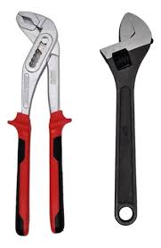
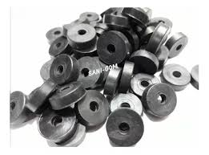

Convertite en el plomero de tu Hogar
Cambio de o'ring de una grifería
Para comenzar, haremos una lista de herramientas y materiales:
-

-
-
-
-
-

A continuación, veremos los pasos necesarios para realizar el cambio:
- Lo primero es cortar el paso de agua de la canilla que debemos reparar.
- Quitar el tornillo que sujeta el volante de la canilla.
- Luego debemos retirar el volante y la campana, para dejar a la vista el vástago.
- Con la pinza pico de loro o llave ajustable debemos retirar el vástago tomándolo por su parte hexagonal.
- Una vez retirado el vástago, en la parte inferior encontraremos el o-ring y su sujetador. Puede que necesitemos la pinza de punta para retirarlo.
- Buscamos el repuesto equivalente al que estaba colocado y lo ubicamos en el mismo lugar.
- Con la fresa para grifería, alisamos el asiento del o-ring (opcional).
- Por último, armamos todo nuevamente, y habilitamos el paso de agua.
- Puesta en marcha y prueba.